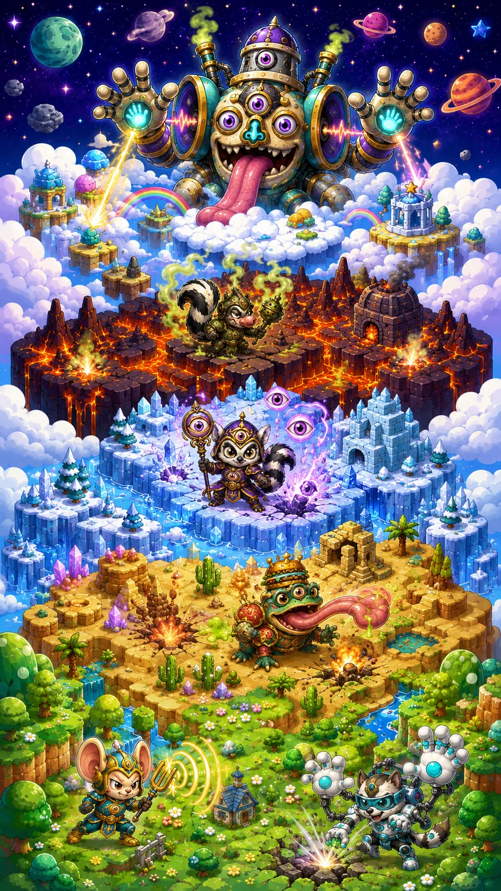

Königreich der Sinne
Scanne QR-Codes in beliebiger Reihenfolge. Der gescannte Code bestimmt, welches Sinnes-Level auf dem aktuellen Feld freigeschaltet wird. Nach bestandenem Quiz wird das nächste Feld aktiv.


Scanne QR-Codes in beliebiger Reihenfolge. Der gescannte Code bestimmt, welches Sinnes-Level auf dem aktuellen Feld freigeschaltet wird. Nach bestandenem Quiz wird das nächste Feld aktiv.
Scanne einen beliebigen noch nicht verwendeten Sinnes-Code.
Kamera wird vorbereitet …
Falls die Kamera auf diesem Gerät nicht verfügbar ist, kann der QR-Code hier eingegeben werden.